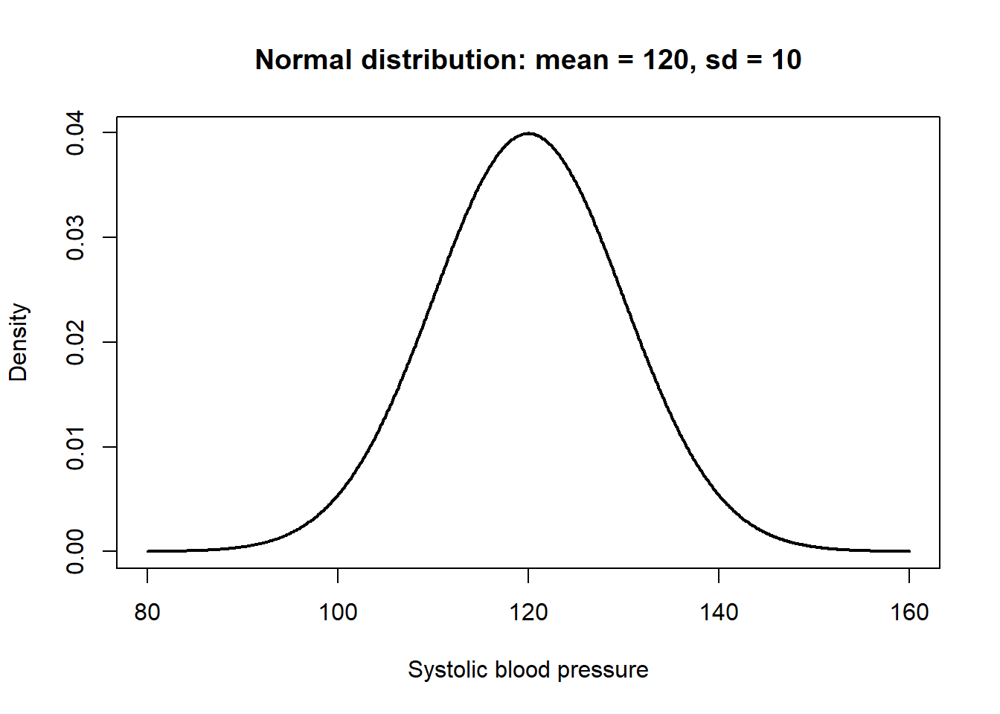
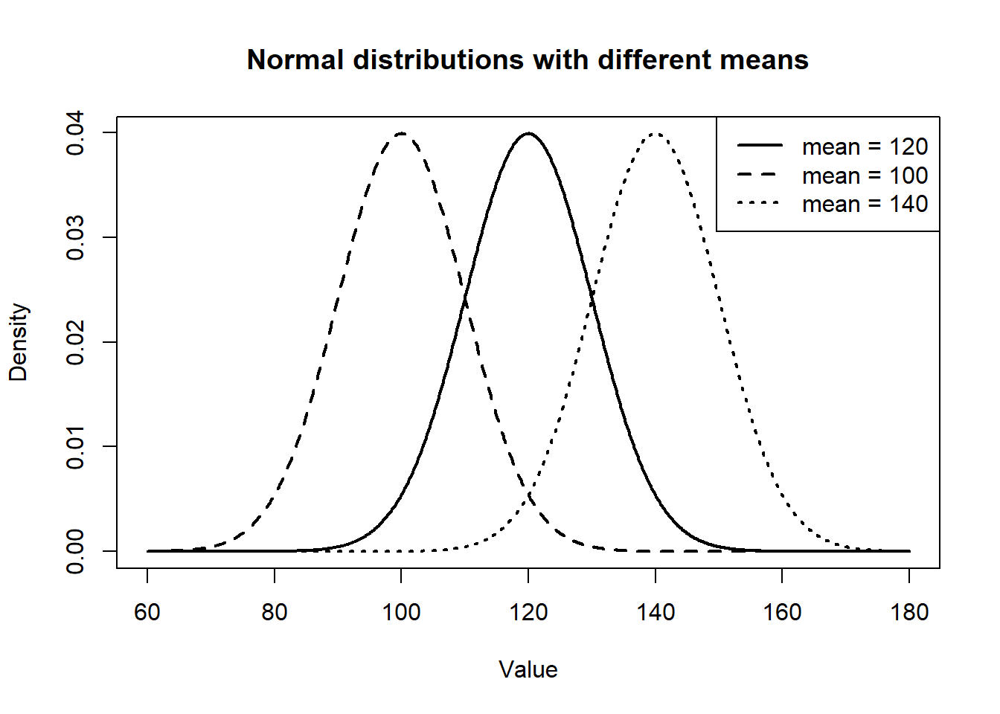
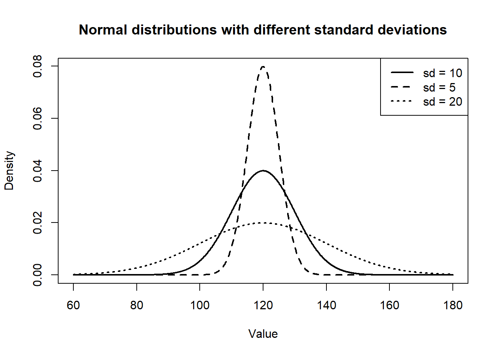
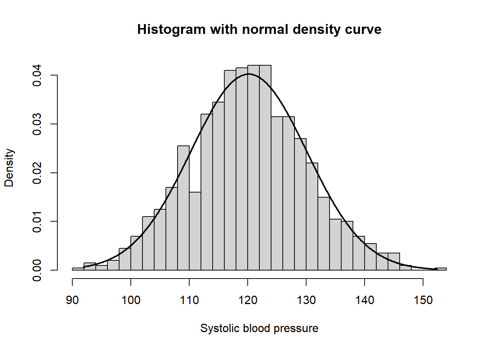
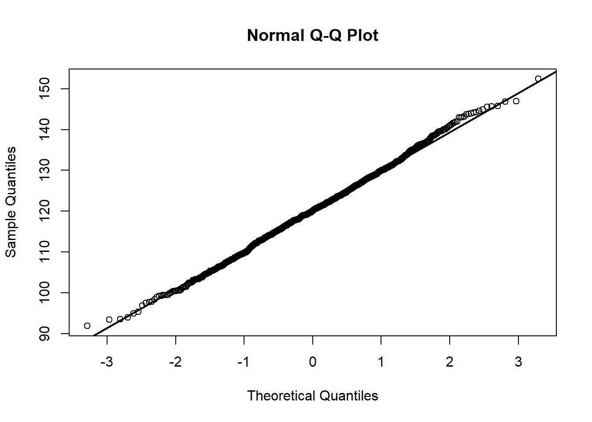

x <- seq(80, 160, by = 0.1)
y <- dnorm(x, mean = 120, sd = 10)
plot(
x, y,
type = "l",
lwd = 2,
xlab = "Systolic blood pressure",
ylab = "Density",
main = "Normal distribution: mean = 120, sd = 10"
)
이번 주 수업의 핵심 주제는 확률분포(probability distribution)와 정규분포(normal distribution)입니다.
바이오통계에서 확률분포는 단순히 “확률을 계산하는 공식”이 아니라, 실제 의학·보건·생명과학 자료에서 관찰되는 불확실성(uncertainty)과 변동성(variability)을 수학적으로 표현하는 언어입니다.
임상 연구를 생각해 봅시다. 같은 병원에서 같은 질환을 가진 환자들이라 하더라도 혈압, 혈당, 콜레스테롤, 치료 반응, 생존 시간은 모두 다릅니다. 이러한 차이는 측정오차 때문만이 아니라, 유전적 차이, 생활습관, 질병의 중증도, 약물 반응성, 환경적 요인 등 수많은 원인이 복합적으로 작용한 결과입니다.
따라서 통계학의 중요한 질문은 다음과 같습니다.
“개별 환자는 다르지만, 전체 환자 집단에서는 어떤 규칙성이 나타나는가?”
확률분포는 바로 이 질문에 답하기 위한 도구입니다.
이번 수업에서는 다음 질문들을 중심으로 학습합니다.
확률변수란 무엇인가?
임상 연구에서 “치료 성공 여부”, “혈압”, “입원 기간”, “돌연변이 개수”와 같은 자료를 어떻게 수학적 변수로 표현할 수 있는가?
확률분포란 무엇인가?
어떤 값이 얼마나 자주 또는 얼마나 높은 확률로 나타나는지를 어떻게 표현할 수 있는가?
이산형 자료와 연속형 자료는 어떻게 다른가?
환자 수, 양성자 수, 사망자 수처럼 셀 수 있는 자료와 혈압, 혈당, 체중처럼 연속적으로 측정되는 자료는 왜 다른 방식으로 다루어야 하는가?
정규분포는 왜 중요한가?
많은 생물학적 변수들이 왜 종 모양의 분포를 보이며, 이 분포가 왜 통계적 추론의 중심이 되는가?
z-score는 무엇을 의미하는가?
단위가 서로 다른 자료들을 어떻게 비교할 수 있는가?
중심극한정리는 왜 통계학의 핵심인가?
원자료가 정규분포가 아니더라도 표본평균이 정규분포에 가까워지는 이유는 무엇인가?
의학 자료는 본질적으로 변동성을 가집니다. 예를 들어 수축기 혈압을 측정한다고 해 봅시다.
같은 60세 남성이라도 어떤 사람은 수축기 혈압이 110 mmHg이고, 어떤 사람은 145 mmHg일 수 있습니다. 당뇨 환자의 공복혈당도 어떤 환자는 105 mg/dL, 어떤 환자는 180 mg/dL일 수 있습니다.
이처럼 관찰값이 달라지는 이유는 다양합니다.
통계학에서는 이러한 변동성을 단순히 “오차”로 무시하지 않습니다. 오히려 변동성 자체를 분석 대상으로 삼습니다.
예를 들어 어떤 병원의 성인 남성 수축기 혈압이 평균 125 mmHg, 표준편차 15 mmHg라고 합시다. 그러면 140 mmHg라는 값은 단순한 숫자가 아니라 다음과 같은 질문으로 해석됩니다.
“이 환자의 혈압은 전체 환자 분포에서 어느 정도 높은 위치에 있는가?”
이 질문에 답하기 위해 우리는 확률분포와 z-score를 사용합니다.
이번 수업을 통해 여러분은 단순히 정규분포의 그래프 모양을 익히는 것을 넘어, 다음과 같은 통계적 사고체계를 습득하게 됩니다.
확률변수(random variable)는 불확실한 실험이나 관찰의 결과를 숫자로 표현한 함수이다.
일상적인 표현으로는 “우연히 결정되는 숫자”라고 이해할 수 있지만, 수학적으로는 조금 더 정확하게 다음과 같이 말한다.
확률변수는 표본공간(sample space)의 각 결과를 하나의 숫자에 대응시키는 함수이다.
즉 확률변수는 단순한 숫자가 아니라, 가능한 결과들을 숫자로 바꾸어 주는 규칙이다.
이를 수식으로 쓰면 다음과 같다.
\[X: \Omega \rightarrow \mathbb{R}\]
여기서
즉 어떤 실험의 가능한 결과가 \(\omega \in \Omega\)일 때, 확률변수 \(X\)는 그 결과에 숫자 \(X(\omega)\)를 부여한다.
\[\omega \mapsto X(\omega)\]
확률변수를 배우는 이유는 실제 세계의 복잡한 결과를 통계적으로 분석 가능한 숫자로 바꾸기 위해서이다.
임상 연구나 보건의학 연구에서 관찰되는 결과는 매우 다양하다.
예를 들어 다음과 같은 연구 상황을 생각해 보자.
| 연구 상황 | 실제 결과 | 숫자로 표현한 확률변수 |
|---|---|---|
| 치료 반응 여부 | 반응 / 무반응 | 반응 = 1, 무반응 = 0 |
| 검사 결과 | 양성 / 음성 | 양성 = 1, 음성 = 0 |
| 생존 여부 | 생존 / 사망 | 생존 = 1, 사망 = 0 |
| 환자 수 | 0명, 1명, 2명, … | 환자 수 \(X\) |
| 혈압 | 118.5 mmHg, 132.1 mmHg 등 | 혈압 \(X\) |
| 생존 기간 | 3.2개월, 15.7개월 등 | 생존 시간 \(T\) |
의학 자료는 원래 문자, 범주, 시간, 수치 등 다양한 형태를 가진다.
하지만 통계 분석을 하려면 이들을 일정한 수학적 구조로 표현해야 한다.
확률변수는 바로 이 역할을 한다.
확률변수는 현실의 관찰 결과를 확률과 수학의 언어로 번역해 주는 도구이다.
확률변수를 제대로 이해하려면 먼저 표본공간(sample space)을 이해해야 한다.
표본공간은 어떤 확률실험에서 가능한 모든 결과의 집합이다.
예를 들어 동전을 두 번 던지는 실험을 생각해 보자.
가능한 결과는 다음 네 가지이다.
\[\Omega = \{HH, HT, TH, TT\}\]
여기서
을 의미한다.
이제 확률변수 \(X\)를 “앞면이 나온 횟수”라고 정의하자.
그러면 각 결과에 대해 \(X\)는 다음 값을 가진다.
| 결과 \(\omega\) | 의미 | \(X(\omega)\) |
|---|---|---|
| \(HH\) | 앞면 2번 | 2 |
| \(HT\) | 앞면 1번 | 1 |
| \(TH\) | 앞면 1번 | 1 |
| \(TT\) | 앞면 0번 | 0 |
따라서 확률변수 \(X\)가 가질 수 있는 값은 다음과 같다.
\[X = 0, 1, 2\]
여기서 중요한 점은 \(HH\), \(HT\), \(TH\), \(TT\) 자체가 확률변수의 값은 아니라는 것이다.
이들은 표본공간의 원소이고, 확률변수는 이 결과들을 숫자로 바꾸어 준다.
\[HH \mapsto 2\]
\[HT \mapsto 1\]
\[TH \mapsto 1\]
\[TT \mapsto 0\]
즉 확률변수는 결과 자체가 아니라, 결과에 숫자를 부여하는 함수이다.
새로운 항암제를 투여한 뒤 환자가 치료에 반응했는지 여부를 관찰한다고 하자.
가능한 결과는 두 가지이다.
\[\Omega = \{\text{반응}, \text{무반응}\}\]
이제 확률변수 \(X\)를 다음과 같이 정의한다.
\[X = \begin{cases} 1, & \text{치료에 반응한 경우} \\ 0, & \text{치료에 반응하지 않은 경우} \end{cases}\]
이 확률변수는 치료 반응이라는 임상적 결과를 0과 1이라는 숫자로 표현한다.
| 실제 결과 | 확률변수 값 |
|---|---|
| 치료 반응 | 1 |
| 치료 무반응 | 0 |
이런 형태의 확률변수는 의학 연구에서 매우 자주 등장한다.
예를 들어 다음과 같은 변수들이 모두 0과 1로 표현될 수 있다.
| 임상 변수 | \(X=1\) | \(X=0\) |
|---|---|---|
| 치료 성공 여부 | 성공 | 실패 |
| 검사 양성 여부 | 양성 | 음성 |
| 사망 여부 | 사망 | 생존 |
| 재발 여부 | 재발 | 비재발 |
| 부작용 발생 여부 | 발생 | 미발생 |
이처럼 두 가지 결과만 가지는 확률변수를 베르누이 확률변수(Bernoulli random variable)라고 한다.
확률변수 \(X\)가 1 또는 0의 값만 가지며, 성공 확률이 \(p\)일 때 \(X\)는 베르누이분포를 따른다고 한다.
\[X \sim Bernoulli(p)\]
이때 확률분포는 다음과 같다.
\[P(X=1)=p\]
\[P(X=0)=1-p\]
예를 들어 어떤 치료제의 성공 확률이 0.7이라면,
\[P(X=1)=0.7\]
\[P(X=0)=0.3\]
이다.
이를 표로 정리하면 다음과 같다.
| \(x\) | 의미 | \(P(X=x)\) |
|---|---|---|
| 0 | 치료 실패 | 0.3 |
| 1 | 치료 성공 | 0.7 |
확률의 합은 반드시 1이어야 한다.
\[P(X=0)+P(X=1)=0.3+0.7=1\]
베르누이 확률변수는 단순하지만, 이후 배우게 될 이항분포, 로지스틱 회귀, 위험도 계산의 기초가 된다.
\(X \sim Bernoulli(p)\)라고 하자.
즉,
\[P(X=1)=p, \quad P(X=0)=1-p\]
이다.
기대값은 확률변수의 장기적인 평균값이다.
이산확률변수의 기대값은 다음과 같이 정의된다.
\[E(X)=\sum_x xP(X=x)\]
베르누이 확률변수의 경우 가능한 값은 0과 1뿐이므로,
\[E(X)=0 \cdot P(X=0) + 1 \cdot P(X=1)\]
\[E(X)=0 \cdot (1-p) + 1 \cdot p\]
\[E(X)=p\]
따라서 베르누이 확률변수의 기대값은 성공확률 \(p\)와 같다.
\[E(X)=p\]
이 결과는 직관적으로도 자연스럽다.
치료 성공을 1, 실패를 0으로 기록하면 여러 환자에서 관찰된 평균값은 곧 치료 성공률이 된다.
예를 들어 10명의 치료 결과가 다음과 같다고 하자.
\[1, 1, 0, 1, 1, 0, 1, 1, 1, 0\]
이때 평균은 다음과 같다.
\[\bar{x} = \frac{1+1+0+1+1+0+1+1+1+0}{10} = \frac{7}{10} = 0.7\]
즉 0과 1로 기록된 변수의 평균은 성공 비율과 같다.
분산은 확률변수가 평균 주변에서 얼마나 퍼져 있는지를 나타낸다.
분산의 정의는 다음과 같다.
\[Var(X)=E[(X-\mu)^2]\]
여기서 \(\mu=E(X)\)이다.
또는 다음 공식을 사용할 수 있다.
\[Var(X)=E(X^2)-[E(X)]^2\]
베르누이 확률변수에서는 \(X\)가 0 또는 1만 가지므로 항상 다음이 성립한다.
\[X^2=X\]
왜냐하면
\[0^2=0, \quad 1^2=1\]
이기 때문이다.
따라서
\[E(X^2)=E(X)=p\]
분산은 다음과 같다.
\[Var(X)=E(X^2)-[E(X)]^2\]
\[Var(X)=p-p^2\]
\[Var(X)=p(1-p)\]
따라서 베르누이 확률변수의 분산은 다음과 같다.
\[Var(X)=p(1-p)\]
이 식은 중요한 의미를 가진다.
성공확률 \(p\)가 0에 가깝거나 1에 가까우면 분산이 작다.
즉 거의 항상 실패하거나 거의 항상 성공하면 결과의 변동성이 작다.
반대로 \(p=0.5\)일 때 분산은 최대가 된다.
\[Var(X)=0.5(1-0.5)=0.25\]
이는 성공과 실패가 반반일 때 결과가 가장 불확실하다는 뜻이다.
확률변수와 관찰값은 구분해야 한다.
확률변수 \(X\)는 실험이나 관찰이 이루어지기 전에 가능한 값을 확률적으로 표현하는 대상이다.
반면 관찰값 \(x\)는 실제로 관찰된 구체적인 값이다.
예를 들어 어떤 환자의 수축기 혈압을 측정하기 전에는 혈압을 확률변수 \(X\)로 생각할 수 있다.
\[X = \text{어떤 환자의 수축기 혈압}\]
측정 전에는 이 값이 118일 수도 있고, 132일 수도 있고, 145일 수도 있다.
하지만 실제로 측정한 결과가 138 mmHg라면,
\[x=138\]
이다.
즉
이다.
| 구분 | 의미 | 예 |
|---|---|---|
| 확률변수 \(X\) | 관찰 전의 불확실한 수량 | 환자의 혈압 |
| 관찰값 \(x\) | 실제로 관찰된 값 | 138 mmHg |
통계학에서는 대문자 \(X\)를 확률변수로, 소문자 \(x\)를 관찰값으로 쓰는 경우가 많다.
확률변수는 자료의 성격에 따라 여러 형태로 나뉜다.
가장 중요한 구분은 이산확률변수와 연속확률변수이다.
| 구분 | 설명 | 예 |
|---|---|---|
| 이산확률변수 | 가능한 값을 셀 수 있음 | 환자 수, 성공자 수, 돌연변이 개수 |
| 연속확률변수 | 연속적인 값을 가짐 | 혈압, 혈당, 키, 체중, 생존시간 |
예를 들어 100명 중 치료에 성공한 환자 수는 0명, 1명, 2명, …, 100명처럼 셀 수 있다.
따라서 이산확률변수이다.
반면 혈압은 120 mmHg와 121 mmHg 사이에도 120.1, 120.01, 120.001처럼 무수히 많은 값이 가능하다.
따라서 연속확률변수로 다룬다.
치료 성공 확률이 \(p=0.7\)인 치료제가 있다고 하자.
3명의 환자에게 이 치료제를 투여하고, 치료 성공자 수를 확률변수 \(X\)라고 하자.
각 환자의 결과를 성공 \(S\), 실패 \(F\)로 나타내면 가능한 결과는 다음과 같다.
\[\Omega = \{SSS, SSF, SFS, FSS, SFF, FSF, FFS, FFF\}\]
이제 확률변수 \(X\)를 “치료 성공자 수”로 정의하면 다음과 같다.
| 결과 | 성공자 수 \(X\) |
|---|---|
| \(SSS\) | 3 |
| \(SSF\) | 2 |
| \(SFS\) | 2 |
| \(FSS\) | 2 |
| \(SFF\) | 1 |
| \(FSF\) | 1 |
| \(FFS\) | 1 |
| \(FFF\) | 0 |
따라서 \(X\)가 가질 수 있는 값은 다음과 같다.
\[X=0,1,2,3\]
각 환자의 치료 성공이 서로 독립이라고 하면, \(X\)는 이항분포를 따른다.
\[X \sim Binomial(n=3, p=0.7)\]
각 값의 확률은 다음과 같이 계산된다.
\[P(X=x) = \binom{3}{x} p^x(1-p)^{3-x}\]
예를 들어 정확히 2명이 치료에 성공할 확률은 다음과 같다.
\[P(X=2) = \binom{3}{2} (0.7)^2(0.3)^1\]
\[= 3 \times 0.49 \times 0.3\]
\[= 0.441\]
즉 3명 중 정확히 2명이 치료에 성공할 확률은 0.441, 즉 44.1%이다.
이 예제에서 중요한 점은 확률변수 \(X\)가 개별 환자의 성공 여부가 아니라, 3명 중 성공한 환자 수라는 점이다.
이번에는 성인 환자의 수축기 혈압을 생각해 보자.
확률변수 \(X\)를 다음과 같이 정의한다.
\[X = \text{성인 환자 1명의 수축기 혈압}\]
혈압은 연속적인 값을 가질 수 있으므로 \(X\)는 연속확률변수이다.
예를 들어 다음과 같은 값들이 가능하다.
\[118.2,\quad 120.5,\quad 132.7,\quad 145.1\]
연속확률변수에서는 특정한 한 값이 나올 확률을 직접 계산하지 않는다.
즉 다음과 같은 확률은 보통 0으로 본다.
\[P(X=120)=0\]
그 대신 구간의 확률을 계산한다.
예를 들어 다음과 같은 질문을 할 수 있다.
\[P(120 \leq X \leq 140)\]
이는 “수축기 혈압이 120 mmHg 이상 140 mmHg 이하일 확률”을 의미한다.
연속확률변수에서 확률은 확률밀도함수 아래의 면적으로 계산된다.
\[P(a \leq X \leq b) = \int_a^b f(x)\,dx\]
여기서 \(f(x)\)는 확률밀도함수이다.
확률변수를 정의했다면, 다음으로 중요한 질문은 이것이다.
이 확률변수가 어떤 값을 얼마나 자주 가지는가?
이 질문에 답하는 것이 확률분포(probability distribution)이다.
예를 들어 치료 성공 여부를 나타내는 베르누이 확률변수 \(X\)가 있다고 하자.
\[X = \begin{cases} 1, & \text{치료 성공} \\ 0, & \text{치료 실패} \end{cases}\]
치료 성공 확률이 0.7이라면 확률분포는 다음과 같다.
| \(x\) | \(P(X=x)\) |
|---|---|
| 0 | 0.3 |
| 1 | 0.7 |
반면 혈압처럼 연속적인 확률변수는 표가 아니라 곡선으로 분포를 표현한다.
예를 들어 혈압이 평균 120, 표준편차 10인 정규분포를 따른다면 다음과 같이 쓴다.
\[X \sim N(120, 10^2)\]
이 표현은 다음을 의미한다.
확률변수는 다른 확률변수로 변환될 수 있다.
예를 들어 혈압 확률변수 \(X\)가 있다고 하자.
\[X = \text{수축기 혈압}\]
평균이 \(\mu\), 표준편차가 \(\sigma\)일 때, 표준화된 확률변수 \(Z\)를 다음과 같이 정의할 수 있다.
\[Z= \frac{X-\mu}{\sigma}\]
이 \(Z\)도 확률변수이다.
왜냐하면 \(X\)가 환자에 따라 달라지면 \(Z\)도 함께 달라지기 때문이다.
이 표준화된 확률변수는 z-score를 계산할 때 사용된다.
예를 들어 평균 혈압이 120, 표준편차가 10이고 어떤 환자의 혈압이 \(X=140\)이면,
\[Z= \frac{140-120}{10} = 2\]
이다.
즉 이 환자의 혈압은 평균보다 2 표준편차 높은 위치에 있다.
이처럼 확률변수의 함수도 다시 확률변수가 된다.
실제 연구에서는 하나의 확률변수만 다루는 경우보다 여러 확률변수를 함께 다루는 경우가 많다.
예를 들어 환자 한 명에 대해 다음과 같은 변수를 측정할 수 있다.
| 확률변수 | 의미 |
|---|---|
| \(X_1\) | 수축기 혈압 |
| \(X_2\) | 공복혈당 |
| \(X_3\) | 총 콜레스테롤 |
| \(X_4\) | 체질량지수 |
| \(Y\) | 심혈관질환 발생 여부 |
이 경우 연구자는 다음과 같은 질문을 할 수 있다.
이러한 질문들은 회귀분석, 로지스틱 회귀, 생존분석과 연결된다.
즉 확률변수는 단순히 확률분포를 배우기 위한 개념이 아니라, 이후 모든 통계모형의 기본 단위이다.
두 확률변수 \(X\)와 \(Y\)가 서로 독립이라는 것은 한 변수의 값이 다른 변수의 값에 대한 정보를 제공하지 않는다는 뜻이다.
수학적으로는 다음 조건을 만족할 때 독립이라고 한다.
\[P(X=x, Y=y) = P(X=x)P(Y=y)\]
즉 \(X=x\)이고 동시에 \(Y=y\)일 확률이 각각의 확률을 곱한 것과 같으면 두 확률변수는 독립이다.
예를 들어 서로 다른 두 환자의 치료 반응이 서로 영향을 주지 않는다고 가정하면, 두 환자의 치료 성공 여부는 독립인 확률변수로 볼 수 있다.
첫 번째 환자의 치료 성공 여부를 \(X_1\), 두 번째 환자의 치료 성공 여부를 \(X_2\)라고 하자.
\[X_1 = \begin{cases} 1, & \text{첫 번째 환자 치료 성공} \\ 0, & \text{첫 번째 환자 치료 실패} \end{cases}\]
\[X_2 = \begin{cases} 1, & \text{두 번째 환자 치료 성공} \\ 0, & \text{두 번째 환자 치료 실패} \end{cases}\]
각 환자의 치료 성공 확률이 0.7이고 서로 독립이라면, 두 환자가 모두 성공할 확률은 다음과 같다.
\[P(X_1=1, X_2=1) = P(X_1=1)P(X_2=1)\]
\[= 0.7 \times 0.7 = 0.49\]
따라서 두 환자가 모두 치료에 성공할 확률은 49%이다.
독립성은 이항분포, 중심극한정리, 표본분포, 회귀분석에서 매우 중요한 가정이다.
통계학에서는 종종 다음과 같은 표현을 사용한다.
\[X_1, X_2, \ldots, X_n \overset{iid}{\sim} F\]
이는 \(X_1, X_2, \ldots, X_n\)이 서로 독립이고 동일한 분포 \(F\)를 따른다는 뜻이다.
여기서 iid는 independent and identically distributed의 약자이다.
즉 다음 두 조건을 동시에 의미한다.
예를 들어 어떤 모집단에서 환자 100명을 무작위로 추출하여 혈압을 측정한다고 하자.
각 환자의 혈압을
\[X_1, X_2, \ldots, X_{100}\]
이라고 하면, 이상적인 단순무작위표본에서는 이들이 서로 독립이고 같은 분포를 따른다고 가정한다.
\[X_1, X_2, \ldots, X_{100} \overset{iid}{\sim} F\]
이 가정이 있어야 표본평균, 표준오차, 신뢰구간, 가설검정의 수학적 이론이 성립한다.
확률변수의 중요한 예 중 하나가 표본평균이다.
환자 \(n\)명의 혈압을 각각
\[X_1, X_2, \ldots, X_n\]
이라고 하자.
표본평균은 다음과 같이 정의된다.
\[\bar{X} = \frac{1}{n} \sum_{i=1}^{n} X_i\]
여기서 각 \(X_i\)가 확률변수이므로, 이들의 평균인 \(\bar{X}\)도 확률변수이다.
왜냐하면 표본을 다시 뽑으면 \(X_1, X_2, \ldots, X_n\)의 값이 달라지고, 따라서 \(\bar{X}\)도 달라지기 때문이다.
즉 표본평균은 고정된 숫자가 아니라, 표본추출에 따라 달라지는 확률변수이다.
이 개념은 매우 중요하다.
왜냐하면 신뢰구간과 가설검정은 표본평균이 표본마다 달라진다는 사실에서 출발하기 때문이다.
\(X_1, X_2, \ldots, X_n\)이 서로 독립이고 모두 평균 \(\mu\), 분산 \(\sigma^2\)를 가진다고 하자.
즉,
\[E(X_i)=\mu\]
\[Var(X_i)=\sigma^2\]
이다.
표본평균은 다음과 같다.
\[\bar{X} = \frac{1}{n} \sum_{i=1}^{n} X_i\]
기대값의 선형성에 의해,
\[E(\bar{X}) = E\left( \frac{1}{n} \sum_{i=1}^{n}X_i \right)\]
\[= \frac{1}{n} \sum_{i=1}^{n}E(X_i)\]
각 \(X_i\)의 기대값이 \(\mu\)이므로,
\[E(\bar{X}) = \frac{1}{n} \sum_{i=1}^{n}\mu\]
\[= \frac{1}{n} n\mu\]
\[= \mu\]
따라서 표본평균의 기대값은 모평균과 같다.
\[E(\bar{X})=\mu\]
이는 표본평균이 모평균을 추정하는 데 적절한 통계량이라는 근거가 된다.
표본평균의 분산은 다음과 같다.
\[Var(\bar{X}) = Var\left( \frac{1}{n} \sum_{i=1}^{n}X_i \right)\]
상수배의 분산 성질에 의해,
\[Var(\bar{X}) = \frac{1}{n^2} Var\left( \sum_{i=1}^{n}X_i \right)\]
\(X_1, X_2, \ldots, X_n\)이 서로 독립이면 합의 분산은 분산의 합과 같다.
\[Var\left( \sum_{i=1}^{n}X_i \right) = \sum_{i=1}^{n}Var(X_i)\]
각 \(X_i\)의 분산이 \(\sigma^2\)이므로,
\[\sum_{i=1}^{n}Var(X_i) = n\sigma^2\]
따라서
\[Var(\bar{X}) = \frac{1}{n^2} n\sigma^2\]
\[= \frac{\sigma^2}{n}\]
즉 표본평균의 분산은 다음과 같다.
\[Var(\bar{X})= \frac{\sigma^2}{n}\]
표본평균의 표준편차는 분산의 제곱근이므로,
\[SD(\bar{X}) = \sqrt{\frac{\sigma^2}{n}} = \frac{\sigma}{\sqrt{n}}\]
이를 표준오차(standard error)라고 한다.
\[SE(\bar{X}) = \frac{\sigma}{\sqrt{n}}\]
이 결과는 매우 중요하다.
표본 크기 \(n\)이 커질수록 표본평균의 변동성은 작아진다.
즉 많은 환자를 관찰할수록 평균 추정값은 더 안정적이 된다.
통계학에서 자주 혼동되는 개념은 확률변수, 모수, 통계량이다.
| 개념 | 의미 | 예 |
|---|---|---|
| 확률변수 | 우연에 의해 값이 달라지는 변수 | 환자의 혈압 \(X\) |
| 모수 | 모집단의 고정된 특성값 | 모평균 \(\mu\), 모분산 \(\sigma^2\) |
| 통계량 | 표본자료로부터 계산되는 값 | 표본평균 \(\bar{X}\), 표본분산 \(S^2\) |
모수는 보통 알 수 없는 고정된 값이다.
예를 들어 대한민국 성인 남성 전체의 평균 혈압 \(\mu\)는 하나의 고정된 값이지만, 실제로는 알기 어렵다.
반면 표본평균 \(\bar{X}\)는 어떤 환자들을 표본으로 뽑느냐에 따라 달라진다.
따라서 표본평균은 확률변수이다.
이 차이를 이해해야 신뢰구간과 가설검정을 올바르게 해석할 수 있다.
확률변수를 다룰 때 자주 사용하는 표기법은 다음과 같다.
| 표기 | 의미 |
|---|---|
| \(X\) | 확률변수 |
| \(x\) | 확률변수의 관찰값 |
| \(P(X=x)\) | 확률변수 \(X\)가 값 \(x\)를 가질 확률 |
| \(P(a \leq X \leq b)\) | 확률변수 \(X\)가 \(a\)와 \(b\) 사이에 있을 확률 |
| \(E(X)\) | 확률변수 \(X\)의 기대값 |
| \(Var(X)\) | 확률변수 \(X\)의 분산 |
| \(SD(X)\) | 확률변수 \(X\)의 표준편차 |
| \(X \sim Bernoulli(p)\) | \(X\)가 성공확률 \(p\)인 베르누이분포를 따름 |
| \(X \sim Binomial(n,p)\) | \(X\)가 시행횟수 \(n\), 성공확률 \(p\)인 이항분포를 따름 |
| \(X \sim N(\mu,\sigma^2)\) | \(X\)가 평균 \(\mu\), 분산 \(\sigma^2\)인 정규분포를 따름 |
정규분포(normal distribution)는 통계학에서 가장 널리 사용되는 연속확률분포이다.
특히 바이오통계에서는 혈압, 혈당, 콜레스테롤, 키, 체중, 검사 오차, 표본평균과 같은 많은 양적 자료를 이해하는 데 핵심적인 역할을 한다.
정규분포가 중요한 이유는 단순히 많은 자료가 정규분포처럼 보이기 때문만은 아니다.
더 중요한 이유는 다음 두 가지이다.
두 번째 성질은 중심극한정리(central limit theorem)와 관련된다.
따라서 정규분포는 단순한 분포 하나가 아니라, 이후 배우게 될 신뢰구간, 가설검정, t-test, 회귀분석의 기초가 된다.
확률변수 \(X\)가 평균 \(\mu\), 분산 \(\sigma^2\)인 정규분포를 따른다면 다음과 같이 쓴다.
\[X \sim N(\mu, \sigma^2)\]
여기서
예를 들어 어떤 성인 집단의 수축기 혈압이 평균 120 mmHg, 표준편차 10 mmHg인 정규분포를 따른다고 하면 다음과 같이 쓴다.
\[X \sim N(120, 10^2)\]
또는
\[X \sim N(120, 100)\]
이라고 쓸 수 있다.
주의할 점은 정규분포 표기에서 두 번째 값은 보통 표준편차가 아니라 분산이라는 점이다.
| 표현 | 의미 |
|---|---|
| \(N(120, 10^2)\) | 평균 120, 표준편차 10 |
| \(N(120, 100)\) | 평균 120, 분산 100 |
| \(N(\mu, \sigma^2)\) | 평균 \(\mu\), 분산 \(\sigma^2\) |
정규분포의 확률밀도함수는 다음과 같다.
\[f(x) = \frac{1}{\sqrt{2\pi\sigma^2}} \exp\left[ -\frac{(x-\mu)^2}{2\sigma^2} \right]\]
처음 보면 복잡해 보이지만, 이 식은 정규분포의 모든 특징을 담고 있다.
이 식에서 중요한 부분은 크게 세 가지이다.
| 부분 | 역할 |
|---|---|
| \(\mu\) | 분포의 중심을 결정한다 |
| \(\sigma^2\) | 분포의 퍼짐 정도를 결정한다 |
| \(\exp\left[-\frac{(x-\mu)^2}{2\sigma^2}\right]\) | 평균에서 멀어질수록 확률밀도가 작아지게 한다 |
즉 정규분포는 평균 \(\mu\)를 중심으로 가장 높고, 평균에서 멀어질수록 점점 낮아지는 종 모양의 분포이다.
정규분포는 흔히 종 모양 곡선(bell-shaped curve)이라고 부른다.
정규분포의 모양은 다음과 같은 특징을 가진다.
이를 수식으로 표현하면 전체 면적은 다음과 같다.
\[\int_{-\infty}^{\infty} f(x)\,dx = 1\]
즉 정규분포 곡선 아래 전체 면적은 전체 확률 1을 의미한다.
정규분포는 연속확률분포이므로 특정한 한 점의 확률은 0이다.
예를 들어 혈압 \(X\)가 정규분포를 따른다고 할 때,
\[P(X=120)=0\]
이다.
이는 “혈압 120이라는 값이 불가능하다”는 뜻이 아니다.
연속형 자료에서는 정확히 120.000000…이라는 한 점을 가질 확률이 0이라는 뜻이다.
대신 연속확률변수에서는 구간의 확률을 계산한다.
예를 들어 혈압이 120 이상 140 이하일 확률은 다음과 같이 쓴다.
\[P(120 \leq X \leq 140)\]
이 확률은 정규분포 곡선 아래에서 120과 140 사이의 면적이다.
일반적으로 연속확률변수 \(X\)의 확률밀도함수가 \(f(x)\)일 때,
\[P(a \leq X \leq b) = \int_a^b f(x)\,dx\]
이다.
정규분포에서도 마찬가지로,
\[P(a \leq X \leq b) = \int_a^b \frac{1}{\sqrt{2\pi\sigma^2}} \exp\left[ -\frac{(x-\mu)^2}{2\sigma^2} \right] dx\]
이다.
다만 이 적분은 손으로 직접 계산하기 어렵기 때문에 보통 표준정규분포표나 R을 사용한다.
정규분포에서 평균 \(\mu\)는 분포의 중심 위치를 결정한다.
예를 들어 다음 세 분포를 생각해 보자.
\[X_1 \sim N(100, 10^2)\]
\[X_2 \sim N(120, 10^2)\]
\[X_3 \sim N(140, 10^2)\]
세 분포는 모두 표준편차가 10으로 같다.
따라서 퍼짐 정도는 같다.
하지만 평균이 각각 100, 120, 140이므로 분포의 중심 위치가 다르다.
| 분포 | 평균 | 표준편차 | 해석 |
|---|---|---|---|
| \(N(100, 10^2)\) | 100 | 10 | 가장 왼쪽에 위치 |
| \(N(120, 10^2)\) | 120 | 10 | 가운데 위치 |
| \(N(140, 10^2)\) | 140 | 10 | 가장 오른쪽에 위치 |
즉 평균은 정규분포 곡선을 왼쪽이나 오른쪽으로 이동시키는 역할을 한다.
평균이 커지면 분포 전체가 오른쪽으로 이동하고, 평균이 작아지면 분포 전체가 왼쪽으로 이동한다.
표준편차 \(\sigma\)는 분포의 퍼짐 정도를 결정한다.
예를 들어 평균은 모두 120이지만 표준편차가 다른 세 분포를 생각해 보자.
\[X_1 \sim N(120, 5^2)\]
\[X_2 \sim N(120, 10^2)\]
\[X_3 \sim N(120, 20^2)\]
이 세 분포는 모두 평균이 120이므로 중심 위치는 같다.
하지만 표준편차가 다르기 때문에 모양이 다르다.
| 분포 | 평균 | 표준편차 | 모양 |
|---|---|---|---|
| \(N(120, 5^2)\) | 120 | 5 | 좁고 높다 |
| \(N(120, 10^2)\) | 120 | 10 | 중간 정도로 퍼져 있다 |
| \(N(120, 20^2)\) | 120 | 20 | 넓고 낮다 |
표준편차가 작으면 값들이 평균 주변에 몰려 있으므로 곡선은 좁고 높다.
표준편차가 크면 값들이 평균 주변에 넓게 퍼져 있으므로 곡선은 넓고 낮다.
즉 표준편차는 정규분포의 변동성을 나타낸다.
정규분포는 평균 \(\mu\)를 중심으로 좌우 대칭이다.
수식으로는 다음과 같은 성질을 가진다.
\[f(\mu - a) = f(\mu + a)\]
즉 평균에서 왼쪽으로 \(a\)만큼 떨어진 지점과 오른쪽으로 \(a\)만큼 떨어진 지점의 확률밀도는 같다.
예를 들어 \(X \sim N(120, 10^2)\)라고 하자.
평균은 120이다.
평균에서 10만큼 떨어진 두 값은 110과 130이다.
\[120 - 10 = 110\]
\[120 + 10 = 130\]
정규분포의 대칭성에 의해 두 지점의 확률밀도는 같다.
\[f(110)=f(130)\]
마찬가지로 평균에서 20만큼 떨어진 100과 140의 확률밀도도 같다.
\[f(100)=f(140)\]
이 성질 때문에 정규분포에서는 평균보다 큰 값이 나올 확률과 평균보다 작은 값이 나올 확률이 같다.
\[P(X < \mu)=0.5\]
\[P(X > \mu)=0.5\]
정규분포의 확률밀도함수는 다음과 같다.
\[f(x) = \frac{1}{\sqrt{2\pi\sigma^2}} \exp\left[ -\frac{(x-\mu)^2}{2\sigma^2} \right]\]
이제 평균에서 오른쪽으로 \(a\)만큼 떨어진 점 \(\mu+a\)에서의 밀도를 계산해 보자.
\[f(\mu+a) = \frac{1}{\sqrt{2\pi\sigma^2}} \exp\left[ -\frac{((\mu+a)-\mu)^2}{2\sigma^2} \right]\]
정리하면,
\[f(\mu+a) = \frac{1}{\sqrt{2\pi\sigma^2}} \exp\left[ -\frac{a^2}{2\sigma^2} \right]\]
이번에는 평균에서 왼쪽으로 \(a\)만큼 떨어진 점 \(\mu-a\)에서의 밀도를 계산한다.
\[f(\mu-a) = \frac{1}{\sqrt{2\pi\sigma^2}} \exp\left[ -\frac{((\mu-a)-\mu)^2}{2\sigma^2} \right]\]
정리하면,
\[f(\mu-a) = \frac{1}{\sqrt{2\pi\sigma^2}} \exp\left[ -\frac{(-a)^2}{2\sigma^2} \right]\]
그런데
\[(-a)^2=a^2\]
이므로,
\[f(\mu-a) = \frac{1}{\sqrt{2\pi\sigma^2}} \exp\left[ -\frac{a^2}{2\sigma^2} \right]\]
따라서
\[f(\mu-a)=f(\mu+a)\]
이다.
즉 정규분포는 평균을 중심으로 좌우 대칭이다.
정규분포에서는 평균, 중앙값, 최빈값이 모두 같다.
\[\text{mean} = \text{median} = \text{mode} = \mu\]
각각의 의미는 다음과 같다.
| 요약값 | 의미 | 정규분포에서의 값 |
|---|---|---|
| 평균 | 분포의 무게중심 | \(\mu\) |
| 중앙값 | 전체 확률을 절반으로 나누는 값 | \(\mu\) |
| 최빈값 | 확률밀도가 가장 높은 값 | \(\mu\) |
정규분포가 평균을 중심으로 좌우 대칭이기 때문에 평균과 중앙값이 같다.
또한 정규분포 곡선은 평균에서 가장 높으므로 최빈값도 평균과 같다.
예를 들어 혈압이 다음 분포를 따른다고 하자.
\[X \sim N(120, 10^2)\]
그러면 평균, 중앙값, 최빈값은 모두 120이다.
정규분포는 평균에서 멀어질수록 확률밀도가 작아진다.
하지만 확률밀도는 완전히 0이 되지는 않는다.
즉 정규분포는 이론적으로 다음 범위 전체에서 정의된다.
\[-\infty < X < \infty\]
이 말은 수학적으로는 정규분포가 음의 무한대부터 양의 무한대까지 값을 가질 수 있다는 뜻이다.
하지만 실제 임상 변수에서는 이 점을 조심해서 해석해야 한다.
예를 들어 혈압은 정규분포로 근사할 수 있지만, 실제 혈압이 음수가 될 수는 없다.
그런데 정규분포는 이론적으로 음의 혈압에도 아주 작은 확률을 부여한다.
이 때문에 정규분포는 현실을 완벽하게 표현하는 분포라기보다는, 많은 연속형 자료를 근사하는 편리한 수학적 모델로 이해해야 한다.
정규분포는 현실 그 자체가 아니라, 현실의 변동성을 설명하기 위한 근사 모델이다.
정규분포 중에서 평균이 0이고 표준편차가 1인 정규분포를 표준정규분포(standard normal distribution)라고 한다.
표준정규분포는 다음과 같이 표현한다.
\[Z \sim N(0,1)\]
여기서 평균은 0, 분산은 1이다.
\[E(Z)=0\]
\[Var(Z)=1\]
표준정규분포는 모든 정규분포 확률 계산의 기준이 된다.
일반적인 정규분포
\[X \sim N(\mu,\sigma^2)\]
를 따르는 확률변수 \(X\)는 다음 변환을 통해 표준정규분포로 바꿀 수 있다.
\[Z= \frac{X-\mu}{\sigma}\]
이 변환을 표준화(standardization)라고 한다.
표준화는 관찰값이 평균에서 표준편차 몇 개만큼 떨어져 있는지를 나타낸다.
\[Z= \frac{X-\mu}{\sigma}\]
여기서
예를 들어 혈압이 다음과 같은 정규분포를 따른다고 하자.
\[X \sim N(120, 10^2)\]
어떤 환자의 혈압이 140이라면 표준화 값은 다음과 같다.
\[Z= \frac{140-120}{10} = 2\]
이는 이 환자의 혈압이 평균보다 2 표준편차 높다는 뜻이다.
반대로 혈압이 105라면,
\[Z= \frac{105-120}{10} = -1.5\]
이는 이 환자의 혈압이 평균보다 1.5 표준편차 낮다는 뜻이다.
확률변수 \(X\)가 다음 정규분포를 따른다고 하자.
\[X \sim N(\mu,\sigma^2)\]
표준화된 확률변수 \(Z\)를 다음과 같이 정의한다.
\[Z= \frac{X-\mu}{\sigma}\]
먼저 \(Z\)의 기대값을 계산해 보자.
\[E(Z) = E\left(\frac{X-\mu}{\sigma}\right)\]
\(\mu\)와 \(\sigma\)는 상수이므로,
\[E(Z) = \frac{1}{\sigma}E(X-\mu)\]
\[= \frac{1}{\sigma}\{E(X)-\mu\}\]
\(E(X)=\mu\)이므로,
\[E(Z) = \frac{1}{\sigma}(\mu-\mu) = 0\]
따라서 표준화된 확률변수의 평균은 0이다.
이제 분산을 계산한다.
\[Var(Z) = Var\left(\frac{X-\mu}{\sigma}\right)\]
상수 이동은 분산에 영향을 주지 않고, 상수배는 제곱되어 분산에 반영된다.
\[Var(Z) = \frac{1}{\sigma^2}Var(X-\mu)\]
상수 \(\mu\)를 빼도 분산은 변하지 않으므로,
\[Var(X-\mu)=Var(X)=\sigma^2\]
따라서
\[Var(Z) = \frac{1}{\sigma^2}\sigma^2 = 1\]
즉
\[E(Z)=0,\quad Var(Z)=1\]
이다.
따라서 \(Z\)는 평균 0, 분산 1인 표준정규분포를 따른다.
\[Z \sim N(0,1)\]
정규분포에서는 평균과 표준편차를 이용하여 자료가 어느 범위에 얼마나 포함되는지 대략적으로 알 수 있다.
이를 경험법칙(empirical rule) 또는 68-95-99.7 규칙이라고 한다.
정규분포에서는 다음이 성립한다.
| 구간 | 포함되는 확률 |
|---|---|
| \(\mu - 1\sigma\)부터 \(\mu + 1\sigma\)까지 | 약 68% |
| \(\mu - 2\sigma\)부터 \(\mu + 2\sigma\)까지 | 약 95% |
| \(\mu - 3\sigma\)부터 \(\mu + 3\sigma\)까지 | 약 99.7% |
수식으로 쓰면 다음과 같다.
\[P(\mu-\sigma \leq X \leq \mu+\sigma) \approx 0.68\]
\[P(\mu-2\sigma \leq X \leq \mu+2\sigma) \approx 0.95\]
\[P(\mu-3\sigma \leq X \leq \mu+3\sigma) \approx 0.997\]
이 규칙은 정규분포를 빠르게 해석할 때 매우 유용하다.
수축기 혈압이 다음 정규분포를 따른다고 하자.
\[X \sim N(120, 10^2)\]
즉 평균은 120, 표준편차는 10이다.
\[120 - 10 = 110\]
\[120 + 10 = 130\]
따라서 약 68%의 환자는 혈압이 110에서 130 사이에 있다.
\[P(110 \leq X \leq 130) \approx 0.68\]
\[120 - 2(10) = 100\]
\[120 + 2(10) = 140\]
따라서 약 95%의 환자는 혈압이 100에서 140 사이에 있다.
\[P(100 \leq X \leq 140) \approx 0.95\]
\[120 - 3(10) = 90\]
\[120 + 3(10) = 150\]
따라서 약 99.7%의 환자는 혈압이 90에서 150 사이에 있다.
\[P(90 \leq X \leq 150) \approx 0.997\]
정규분포에서는 평균에서 멀리 떨어진 값일수록 관찰될 가능성이 낮다.
이때 “얼마나 멀리 떨어져 있는가”는 원래 단위가 아니라 표준편차 단위로 해석하는 것이 좋다.
예를 들어 혈압 \(X\)가 다음 정규분포를 따른다고 하자.
\[X \sim N(120, 10^2)\]
혈압 150은 평균에서 30만큼 떨어져 있다.
\[150 - 120 = 30\]
표준편차가 10이므로 z-score는 다음과 같다.
\[z= \frac{150-120}{10} = 3\]
즉 혈압 150은 평균보다 3 표준편차 높은 값이다.
경험법칙에 따르면 정규분포에서는 평균 \(\pm 3\) 표준편차 안에 약 99.7%의 값이 포함된다.
따라서 평균보다 3 표준편차 이상 떨어진 값은 비교적 드문 관찰값이다.
\[P(|Z|>3) \approx 0.003\]
오른쪽 꼬리만 보면 약 0.15%이다.
\[P(Z>3) \approx 0.0015\]
따라서 혈압이 평균보다 3 표준편차 이상 높은 경우는 통계적으로 매우 드문 값이라고 해석할 수 있다.
다만 주의해야 할 점이 있다.
통계적으로 드문 값이 항상 의학적으로 비정상이라는 뜻은 아니다.
임상적 판단에는 환자의 상태, 질병 위험도, 검사 기준, 측정 상황, 반복 측정 결과를 함께 고려해야 한다.
정규분포에서는 어떤 값이 전체 분포에서 어느 위치에 있는지를 백분위수(percentile)로 해석할 수 있다.
표준정규분포 \(Z \sim N(0,1)\)에서 대표적인 값은 다음과 같다.
| z-score | 누적확률 \(P(Z \leq z)\) | 해석 |
|---|---|---|
| -2.00 | 약 0.0228 | 하위 약 2.3% |
| -1.00 | 약 0.1587 | 하위 약 15.9% |
| 0.00 | 0.5000 | 50번째 백분위수 |
| 1.00 | 약 0.8413 | 하위 약 84.1% |
| 1.96 | 약 0.9750 | 하위 약 97.5% |
| 2.00 | 약 0.9772 | 하위 약 97.7% |
특히 \(z=1.96\)은 매우 중요하다.
표준정규분포에서 가운데 약 95%는 다음 구간 안에 들어간다.
\[P(-1.96 \leq Z \leq 1.96) \approx 0.95\]
이 값은 이후 95% 신뢰구간을 이해하는 데 직접적으로 연결된다.
어떤 추정량 \(\hat{\theta}\)가 평균 \(\theta\), 표준오차 \(SE\)인 정규분포에 가깝다고 하자.
\[\hat{\theta} \approx N(\theta, SE^2)\]
이를 표준화하면 다음과 같다.
\[Z= \frac{\hat{\theta}-\theta}{SE} \approx N(0,1)\]
표준정규분포에서 다음이 성립한다.
\[P(-1.96 \leq Z \leq 1.96) \approx 0.95\]
따라서
\[P\left( -1.96 \leq \frac{\hat{\theta}-\theta}{SE} \leq 1.96 \right) \approx 0.95\]
이를 \(\theta\)에 대해 정리하면 다음과 같은 형태가 된다.
\[P\left( \hat{\theta}-1.96SE \leq \theta \leq \hat{\theta}+1.96SE \right) \approx 0.95\]
따라서 95% 신뢰구간은 다음과 같은 형태로 나타난다.
\[\hat{\theta} \pm 1.96SE\]
즉 정규분포의 성질은 신뢰구간과 가설검정의 수학적 기초가 된다.
정규분포는 매우 유용하지만 모든 자료에 적절한 것은 아니다.
| 자료 형태 | 정규분포가 부적절할 수 있는 이유 | 가능한 대안 |
|---|---|---|
| 성공/실패 자료 | 값이 0 또는 1뿐이다 | 베르누이분포, 이항분포 |
| 사건 발생 횟수 | 0 이상의 정수만 가능하다 | 포아송분포 |
| 생존 시간 | 음수가 될 수 없고 오른쪽 꼬리가 길다 | 지수분포, Weibull 분포, 생존분석 |
| 의료비 자료 | 오른쪽으로 심하게 치우친 경우가 많다 | 로그변환, 감마분포 |
| 이상값이 많은 자료 | 평균과 표준편차가 크게 흔들릴 수 있다 | 비모수 방법, robust 방법 |
따라서 정규분포를 사용하기 전에는 자료의 모양을 확인해야 한다.
히스토그램, 밀도곡선, Q-Q plot 등을 이용하면 자료가 정규분포에 가까운지 시각적으로 확인할 수 있다.
다음 코드는 평균 120, 표준편차 10인 정규분포를 그린다.
x <- seq(80, 160, by = 0.1)
y <- dnorm(x, mean = 120, sd = 10)
plot(
x, y,
type = "l",
lwd = 2,
xlab = "Systolic blood pressure",
ylab = "Density",
main = "Normal distribution: mean = 120, sd = 10"
)
dnorm() 함수는 정규분포의 확률밀도값을 계산한다.
평균이 달라지면 정규분포는 좌우로 이동한다.
표준편차가 같다면 분포의 퍼짐 정도는 같고, 중심 위치만 달라진다.
x <- seq(60, 180, by = 0.1)
y1 <- dnorm(x, mean = 100, sd = 10)
y2 <- dnorm(x, mean = 120, sd = 10)
y3 <- dnorm(x, mean = 140, sd = 10)
plot(
x, y2,
type = "l",
lwd = 2,
ylim = c(0, max(y1, y2, y3)),
xlab = "Value",
ylab = "Density",
main = "Normal distributions with different means"
)
lines(x, y1, lwd = 2, lty = 2)
lines(x, y3, lwd = 2, lty = 3)
legend(
"topright",
legend = c("mean = 120", "mean = 100", "mean = 140"),
lwd = 2,
lty = c(1, 2, 3)
)
표준편차가 달라지면 정규분포의 퍼짐 정도가 달라진다.
평균이 같더라도 표준편차가 작으면 좁고 높은 곡선이 되고, 표준편차가 크면 넓고 낮은 곡선이 된다.
x <- seq(60, 180, by = 0.1)
y1 <- dnorm(x, mean = 120, sd = 5)
y2 <- dnorm(x, mean = 120, sd = 10)
y3 <- dnorm(x, mean = 120, sd = 20)
plot(
x, y2,
type = "l",
lwd = 2,
ylim = c(0, max(y1, y2, y3)),
xlab = "Value",
ylab = "Density",
main = "Normal distributions with different standard deviations"
)
lines(x, y1, lwd = 2, lty = 2)
lines(x, y3, lwd = 2, lty = 3)
legend(
"topright",
legend = c("sd = 10", "sd = 5", "sd = 20"),
lwd = 2,
lty = c(1, 2, 3)
)
혈압이 다음 정규분포를 따른다고 하자.
\[X \sim N(120, 10^2)\]
혈압이 140 이하일 확률은 다음과 같이 계산한다.
pnorm(140, mean = 120, sd = 10)[1] 0.9772499이는 다음 확률을 의미한다.
\[P(X \leq 140)\]
혈압이 140보다 클 확률은 다음과 같이 계산한다.
1 - pnorm(140, mean = 120, sd = 10)[1] 0.02275013이는 다음 확률을 의미한다.
\[P(X > 140)\]
혈압이 110 이상 135 이하일 확률은 다음과 같이 계산한다.
pnorm(135, mean = 120, sd = 10) -
pnorm(110, mean = 120, sd = 10)[1] 0.7745375이는 다음 확률을 의미한다.
\[P(110 \leq X \leq 135)\]
qnorm() 함수는 정규분포에서 특정 누적확률에 해당하는 값을 구한다.
예를 들어 표준정규분포에서 누적확률이 0.975가 되는 값을 구하면 다음과 같다.
qnorm(0.975)[1] 1.959964결과는 약 1.96이다.
이는 표준정규분포에서 97.5번째 백분위수가 약 1.96이라는 뜻이다.
평균 120, 표준편차 10인 정규분포에서 상위 2.5%의 기준값은 다음과 같다.
qnorm(0.975, mean = 120, sd = 10)[1] 139.5996rnorm() 함수는 정규분포를 따르는 난수를 생성한다.
set.seed(123)
bp <- rnorm(n = 100, mean = 120, sd = 10)
head(bp)[1] 114.3952 117.6982 135.5871 120.7051 121.2929 137.1506mean(bp)[1] 120.9041sd(bp)[1] 9.128159생성된 표본자료의 평균과 표준편차는 정확히 120과 10이 아닐 수 있다.
이는 표본추출의 우연성 때문이다.
표본 크기를 크게 하면 표본평균과 표본표준편차는 이론적 값에 더 가까워지는 경향이 있다.
set.seed(123)
bp_large <- rnorm(n = 10000, mean = 120, sd = 10)
mean(bp_large)[1] 119.9763sd(bp_large)[1] 9.986366생성된 혈압 자료가 정규분포와 비슷한 모양을 보이는지 확인해 보자.
set.seed(123)
bp <- rnorm(n = 1000, mean = 120, sd = 10)
hist(
bp,
probability = TRUE,
breaks = 30,
xlab = "Systolic blood pressure",
main = "Histogram with normal density curve"
)
x <- seq(min(bp), max(bp), by = 0.1)
y <- dnorm(x, mean = mean(bp), sd = sd(bp))
lines(x, y, lwd = 2)
히스토그램은 실제 표본자료의 분포를 보여주고, 곡선은 같은 평균과 표준편차를 가진 정규분포의 밀도곡선을 보여준다.
Q-Q plot은 자료가 정규분포와 얼마나 비슷한지 확인하는 데 사용된다.
qqnorm(bp)
qqline(bp, lwd = 2)
자료가 정규분포에 가깝다면 점들이 대체로 직선 주변에 놓인다.
반대로 점들이 직선에서 크게 벗어나면 정규분포 가정이 적절하지 않을 수 있다.